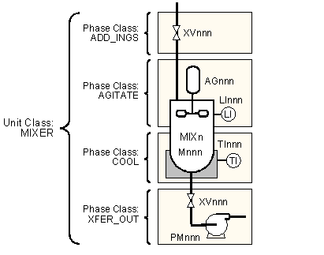
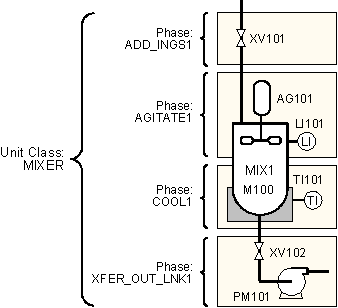

Equipment and control modules
Equipment and control modules are combined together to form a unit. The S88 standard defines these modules as follows:
Equipment Module - consists of equipment and control modules that together perform a minor processing task.
Control Module - consists of sensors and other control modules that together perform a specific task. Control modules perform regulatory or state control over their constituent parts.
In the DeltaV system, an equipment module is a module where several devices are involved with the control of a single control parameter through a function block diagram, an SFC, or a unit module and its corresponding unit phase. Examples of an equipment module include an agitator and corresponding level limit switches or a grouping of discrete and analog values that provide temperature controls on a jacketed reactor.
A control module, in the DeltaV system, is a DeltaV module that uses one of the following algorithm types; a function block diagram, an SFC, a command-driven algorithm, or a state-driven algorithm, to affect the control of one device.
The following figure continues the paint example, showing an example of the phase classes defined to execute the equipment and control modules on the MIXER unit class. These definitions apply to all instances of the MIXER unit class.

The next figure continues the paint example, showing the phases for the MIX1 unit.
